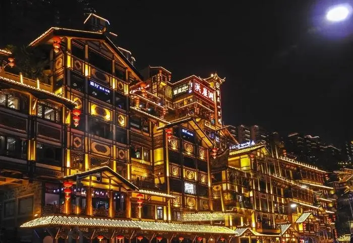
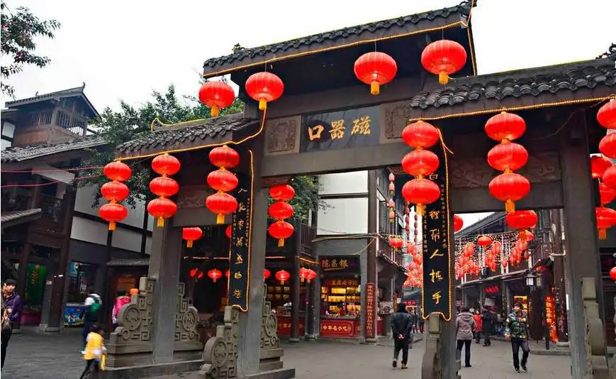
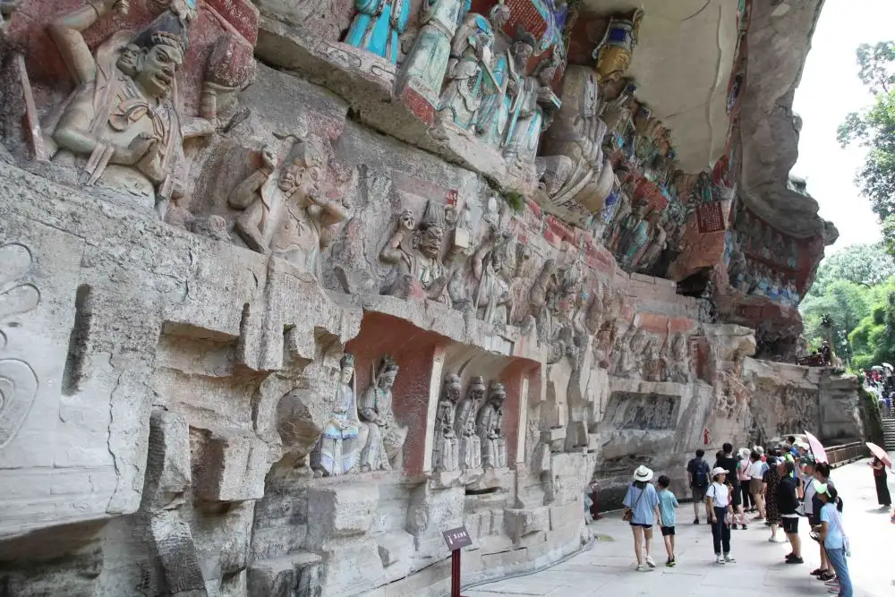
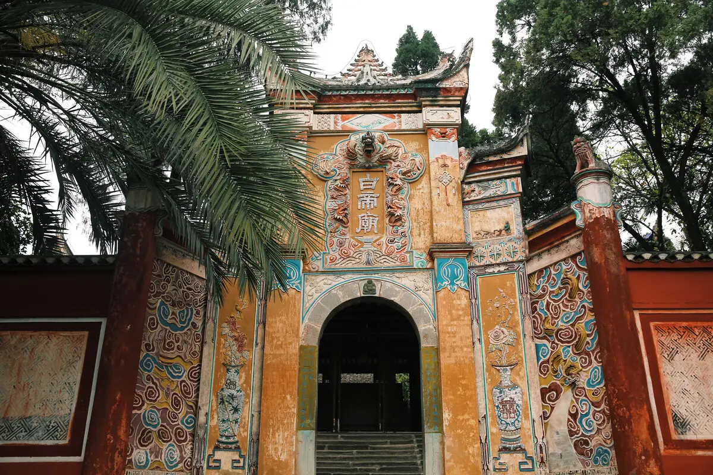

重庆-美景
|  |  |
图1-1 洪崖洞 |
图1-2 瓷器口 |
洪崖洞原名洪崖门，是古重庆城门之一，位于重庆市渝中区解放碑沧白路，地处长江、嘉陵江两江交汇的滨江地带，是兼具观光旅游、休闲度假等功能的旅游区。 2006年，由重庆市人民政府总投资3.85亿元兴建而成。 洪崖洞是重庆市重点景观工程，建筑面积4.6万平方米，主要景点由吊脚楼、仿古商业街等景观组成。洪崖洞一共有11层，夜晚灯光从晚上6点开灯，10点熄灯。 可望吊脚群楼观洪崖滴翠，逛山城老街赏巴渝文化，烫山城火锅看两江汇流，品天下美食。形成了“一态、三绝、四街、八景”的经营形态，体现了巴渝文化休闲业态 。 2007年11月，重庆洪崖洞民俗风貌区被评定为国家AAAA级旅游景区。 2020年11月18日，洪崖洞被列入“成渝十大文旅新地标”。 2021年12月，洪崖洞被列入“重庆市第二批历史地名保护名录”。 |
磁器口古镇，原名龙隐镇 ，国家AAAA级景区，中国历史文化名街，重庆市重点保护传统街，重庆“新巴渝十二景”，巴渝民俗文化旅游圈。 磁器口古镇位于重庆市沙坪坝区嘉陵江畔，始建于宋代，拥有“一江两溪三山四街”的独特地貌，形成天然良港，是嘉陵江边重要的水陆码头。 磁器口古镇，曾经“白日里千人拱手，入夜后万盏明灯”繁盛一时。巴渝文化、宗教文化、沙磁文化、红岩文化和民间文化，各具特色。 一条石板路，千年磁器口，是重庆古城的缩影和象征，被赞誉为“小重庆”，磁器口古镇开发有榨油、抽丝、制糖、捏面人、川戏等传统表演项目和各种传统小吃、茶馆等，每年春节举办的磁器口庙会是最具特色的传统活动，吸引数万市民前往参与。 2020年11月18日，当选“成渝十大文旅产业地标”。 |
|  | |
图1-3 解放碑 |
图1-4 大足石刻 |
抗战胜利纪功碑暨人民解放纪念碑，简称“解放碑”，位于重庆市渝中区解放碑商业步行街中心地带，于1946年10月31日动工，1947年8月落成，是抗战胜利的精神象征，是中国唯一一座纪念中华民族抗日战争胜利的纪念碑。 抗战胜利纪功碑暨人民解放纪念碑正面向北偏东，为八面柱体盔顶钢筋混凝土结构，碑通高27.5米，边长2.55米，碑内连地下共八层，设有旋梯达于碑顶，碑顶向街口的四面装有自鸣钟，碑台周围为花圃，总占地面积62平方米，保护范围面积642平方米。 该处是中国人民反法西斯战争取得胜利的象征，也是重庆解放及重庆市的象征。 2000年9月，被重庆市人民政府公布为直辖后第一批市级文物保护单位。2013年5月，被国务院列入“第七批全国重点文物保护单位”。 2016年5月18日，解放碑入选“重庆十大文化符号” [16] 。2016年9月，入选“首批中国20世纪建筑遗产”名录。 2020年11月18日，当选“成渝十大文旅新地标”。 | 大足石刻位于重庆市大足区境内，是唐、五代、宋时所凿造，明、清两代亦续有开凿。现为世界文化遗产，世界八大石窟之一。 大足石刻分布于该县西南、西北和东北的扇区，共23处。较集中的有宝顶山、北山等19处。其中以宝顶山摩崖造像规模最大，造像最精美。除佛像和道教造像外，也有儒、佛、道同在一龛窟中的三教造像，而以佛教造像所占比例最大。 大足石刻代表了公元9—13世纪世界石窟艺术的最高水平，是人类石窟艺术史上最后的丰碑。它从不同侧面展示了唐、宋时期中国石窟艺术风格的重大发展和变化，具有前期石窟不可替代的历史、艺术、科学价值。并以规模宏大、雕刻精美、题材多样、内涵丰富、保存完好而著称于世。 1999年12月，以宝顶山、北山、南山、石门山、石篆山“五山”为代表的大足石刻，被联合国教科文组织列入《世界遗产名录》，是重庆唯一的世界文化遗产。 大足石刻现为国家AAAAA级旅游景区，全国重点文物保护单位，重庆十大文化符号， 2016年国庆假期旅游“综合秩序最佳景区”。 2018年12月7日，入选由中央广播电视总台央视财经频道和盈科旅游主办的2018《魅力中国城》文化旅游魅力榜。2020年11月18日，当选“巴蜀文化旅游走廊新地标”。 |
|  | |
图1-5 金佛山 |
图1-6 白帝城 |
金佛山，位于重庆市南川区境内，大娄山脉北部，面积1300平方千米，景区面积441平方千米，主峰凤凰岭（风吹岭）为金佛山最高峰，海拔2238米，森林覆盖率达95%以上，负氧离子含量每立方厘米约十万个。 金佛山25万亩原始常绿林中，萃集237科2997种植物。景区被誉为“东方的阿尔卑斯山”。金佛山属典型的喀斯特地质地貌，峰谷绵延数十条大小山脉，屹立100多座峭峻峰峦。区内天然溶洞星罗棋布，以古佛洞最为著名。 2013年9月13日，南川区金佛山联合神龙峡风景区正式被国家旅游局批准为国家AAAAA级风景名胜区； 2014年6月15日，金佛山景区入选世界自然遗产，被列入《世界遗产名录》。 | 白帝城，位于重庆市奉节县白帝镇白帝村1号社，地处瞿塘峡口长江北岸，白帝山上，东望夔门，南与白盐山隔江相望，西临奉节县城，北倚鸡公山，地处长江三峡（长江三峡西起重庆奉节白帝城，东至湖北宜昌南津关）西端入口 。 白帝城拥有多座城门，发现的有东门、小北门、大北门、皇殿台瓮城门（桑閤门）、小西门、西门等。东、西城门靠近长江。 白帝城筑造是在历代筑城基础上增补及修建而成，白帝城存在城套城、城压城的现象，南宋宋元战争山城则是城连城、城中城、城外城的防御体系，具有强烈的军事堡垒特征。 2006年5月25日，白帝城被中华人民共和国国务院公布为第六批全国重点文物保护单位。 2020年11月18日，当选“巴蜀文化旅游走廊新地标”。 2022年1月，白帝城被列入重庆首批历史名园名单。 |